Япония: маршрут с 16.10
Брони
✅ Поезд пт 16.10 Shinjuku → Matsumoto (Azusa 33)
✅ Отель Matsumoto 16-17.10 (Dormy Inn)
✅ Отель Takayama 17-19.10 (Kuretakeso Ekimae)
✅ Автобус сб 17.10 Shin-Shimashima 11:30 → Kamikochi 12:35 (билет = письмо на почте)
✅ Автобусы вс 18.10: Takayama 13:20 → Shirakawa-go, обратно 17:25 (Japan Bus Online)
⏳ Отель Kyoto с 19.10 - неделя фестиваля, лучше не тянуть
⏳ Поезд пн 19.10 Takayama → Kyoto - можно на станции
Карта маршрута
План по дням
Погода: Open-Meteo, 16.10 15:47, и прогноз японской метеослужбы JMA от 16.10 11:00 (сб-вс 10-20% дождя, пн-ср 50-60%, чт 30%).
Tokyo → Matsumoto
✅ Поезд Azusa 33, Shinjuku 15:00 → Matsumoto 17:37 (вагон 9, место 8-D). От станции до отеля 6 мин пешком, восточный выход お城口.
✅ Ночь: Dormy Inn Matsumoto.
🌙 Вечерняя прогулка: Nakamachi → Nawate → Yohashira (карта, фото, ужин).
☀️ сухо

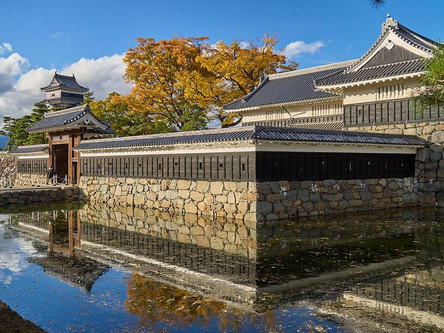
Matsumoto → Kamikochi → Takayama
8:30 замок Matsumoto (от отеля 14 мин), чемодан на стойке отеля.
10:45 поезд Alpico, платформа 7 → Shin-Shimashima 11:15 (билет на станции, Suica на этой линии не работает).
✅ Автобус 11:30 → Kamikochi 12:35 куплен: билет = письмо «★メール乗車票» на почте alexey@myneobank.com, показать водителю на телефоне. QR и бумажного билета нет.
Kamikochi: чемодан в камеру хранения на автостанции (до 17:00), прогулка мост Kappa-bashi → пруд Taisho-ike.
16:30 шаттл → Hirayu 16:55 → автобус 17:30 → Takayama 18:31.
✅ Ночь: Hotel Kuretakeso Takayama Ekimae (2 ночи). От автовокзала ~7 мин: по галерее 2-го этажа станции (匠通り) на западный выход 白山口.
☀️ Matsumoto +20/+10, Kamikochi +13/+4, сухо, ясно
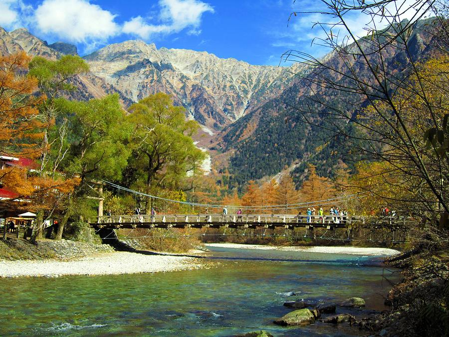

Takayama + Shirakawa-go на день
✅ Автобус Takayama 13:20 → Shirakawa-go 14:10, место 3A. Там 3 ч 15 мин: обед, смотровая над деревней, Wada House (до 17:00), подвесной мост и музей Minkaen.
✅ Обратно 17:25 → Takayama 18:15, место 1A. Билеты = письма «E-ticket from JapanBusOnline» на почте, показать водителю. Утро свободно: Takayama, утренний рынок и старый город.
Вечер в Takayama. ✅ Ночь: Kuretakeso.
☀️ Takayama +21/+8, Shirakawa-go +20/+10, сухо
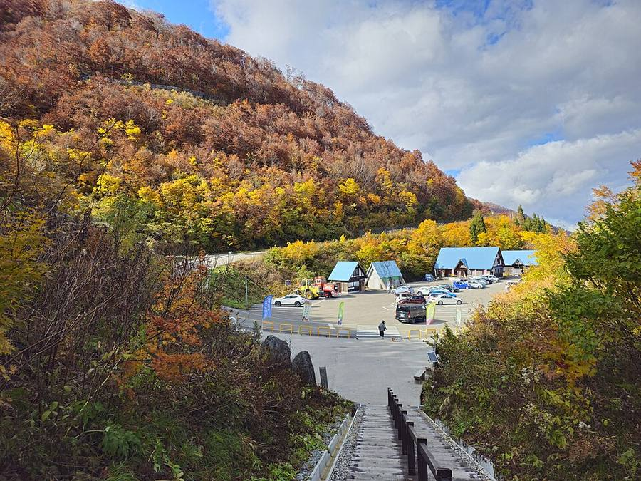
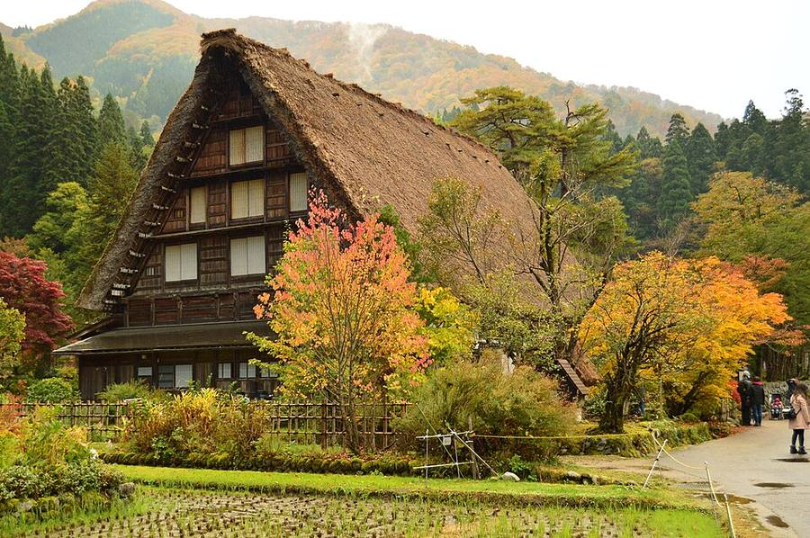
Takayama → Kyoto
Поезд Hida до Nagoya + синкансэн: 11:35 → 14:57 (3 ч 22, 1 пересадка). Без пересадок: прямой Hida 15:34 → 19:17. Билет на станции.
Можно с остановкой в Inuyama (замок) или Gero Onsen - см. Планирование.
⏳ Ночь: отель в Kyoto не забронирован.
🌧 начинается дождь: Takayama 4 мм, Kyoto 2 мм
Kyoto
Kyoto и окрестности. Во вторник почти сухо, в среду дождь - храмы с залами и музеи.
⛅ вт ~1 мм, 🌧 ср ~11 мм
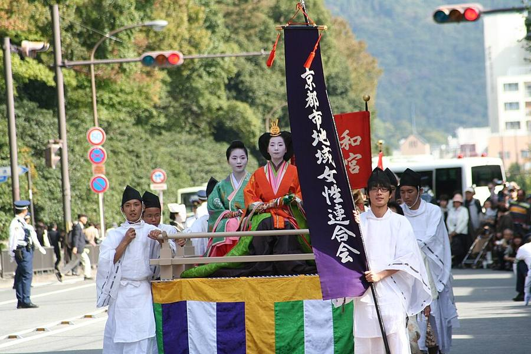

Kyoto: фестивали
★ Днём шествие эпох Jidai Matsuri, вечером огненный фестиваль Kurama.
⛅ сухо, +21/+11
Дальше на юг
Варианты ниже, в разделе «После Kyoto». Из Японии выехать примерно до 07.11.
Фестивали на пути
Только будущие, на 16.10. ★ - отмечено тобой или опорная дата.
| Когда | Что | Как это выглядит | Как попасть | Насколько точно |
|---|---|---|---|---|
| 18.10 | Doburoku, Shirakawa-go | деревенский праздник урожая: шествие 9:00, обряд с саке doburoku 15:00, раздача и песни 15:30-17:00, львиный танец 19:00. 16-17 у святилища Hatogaya, 18-19 у Iijima | попадает на твою поездку в Shirakawa-go в вс 18.10 (18-19 у святилища Iijima); обряд в 15:00 - тогда обратно автобусом 16:15 или 17:30 | даты по NTA и tabi-mag, 2026 официально не подтверждено |
| ★ 22.10 | Огненный фестиваль Kurama + шествие эпох, Kyoto | днём шествие эпох, с 18:00 факелы и паланкины в горной деревне Kurama, до ~0:00 | ты в Kyoto с 19.10, опорная дата | японские гиды; расписание поездов 2026 ещё не вышло |
| 23-24.10 | Hakata Okunchi, Fukuoka | праздник святилища Kushida, 24.10 шествие, паланкин тянет бык | в концовках ты в это время в Osaka | по прошлым годам, 2026 не подтверждено |
| 24.10-9.11 | Выставка сокровищ Shosoin, Nara | раз в год показывают императорские сокровища VIII века, 60 предметов | все концовки через Osaka: из Kyoto 47 мин, из Osaka 50 мин | несколько источников |
| 25.10 | Стрельба из лука с коня, Osaka Tenmangu | синтоистский обряд | Osaka 23-25.10: из Kyoto 46 мин | одна подборка событий, детали не подтверждены |
| ★ 30.10-3.11 | Фестиваль воздушных шаров, Saga | соревнования, массовые старты утром около 7:00; 28-29.10 тренировочные полёты; временная станция Balloon Saga | E2: база Fukuoka, из Hakata 38 мин | официальный сайт sibf.jp |
| ★ 2-4.11 | Karatsu Kunchi | 14 огромных повозок hikiyama, ЮНЕСКО. 2.11 вечер 19:30-22:00, 3.11 главный день 9:30-16:30, 4.11 шествие по городу | E2: из Hakata 1 ч 09 мин; вылет тогда ~4.11 | tabi-mag, NTA |
| 2-3.11 | Ohara-matsuri, Kagoshima | большой уличный танцевальный фестиваль | E2: из Hakata 1 ч 23 мин | официальный сайт города |
| ноябрь | Праздник замка Shuri, Okinawa | шествие в костюмах королевства Рюкю | E3 | даты 2026 ещё не объявлены (в 2025 было 1-3.11) |
Места
Видео: по одному на место
 4K映像 絶景「秋 紅葉の上高地 大正池と穂高連峰Ⅱ」日本の美しい四季 長野県松本市 10月下旬 自然風景
4K映像 絶景「秋 紅葉の上高地 大正池と穂高連峰Ⅱ」日本の美しい四季 長野県松本市 10月下旬 自然風景Yatsugatake21_4K_Japan · 27 мин
 Takayama - The most beautiful and Traditional Town in Japan.
Takayama - The most beautiful and Traditional Town in Japan.Ninja Walking · 14 мин
 [8K] Autumn leaves of Shirakawa-go, one of Japan's three most unexplored regions
[8K] Autumn leaves of Shirakawa-go, one of Japan's three most unexplored regions異世界ひとり旅 ～Deep spot Japan～ · 34 мин
 🟣The Story of Matsumoto Castle, a National Treasure (English-dubbed)
🟣The Story of Matsumoto Castle, a National Treasure (English-dubbed)【公式】国宝松本城 / National Treasure "Matsumoto Castle" · 20 мин
 Kyoto Festival: Jidai Matsuri [4K]
Kyoto Festival: Jidai Matsuri [4K]Discover Kyoto · 14 мин
 [Kyoto, Japan] Kurama Fire Festival | Rising Flames and Smoke [4K]
[Kyoto, Japan] Kurama Fire Festival | Rising Flames and Smoke [4K]The KYOTO · 28 мин
 THE Dotonbori Guide: What the Others Don't Tell You! 🐙🌃🏃♂️
THE Dotonbori Guide: What the Others Don't Tell You! 🐙🌃🏃♂️PiQtour Japan · 17 мин
 Beppu Hell Tour perfect guide 7 hells! Prices? Famous food? Efficient direction?
Beppu Hell Tour perfect guide 7 hells! Prices? Famous food? Efficient direction?NihonMura · 18 мин
 Miyajima Island Guide – The Perfect Day Trip From Hiroshima
Miyajima Island Guide – The Perfect Day Trip From HiroshimaThe Navigatio Japan · 11 мин
На страницах городов по 2-3 видео.
После Kyoto, с 23.10
Выбор зависит от Web Summit (Lisbon 9-12.11). Решаем позже, это пока варианты.
E1. С Web Summit

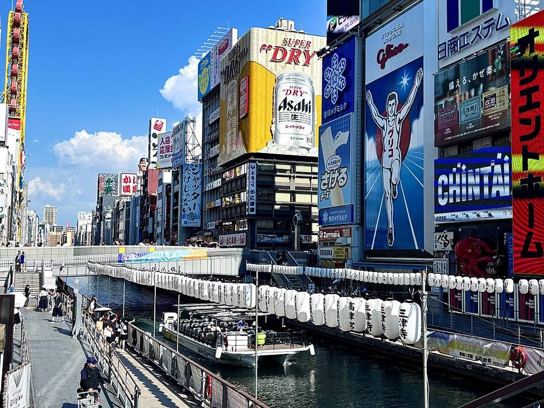


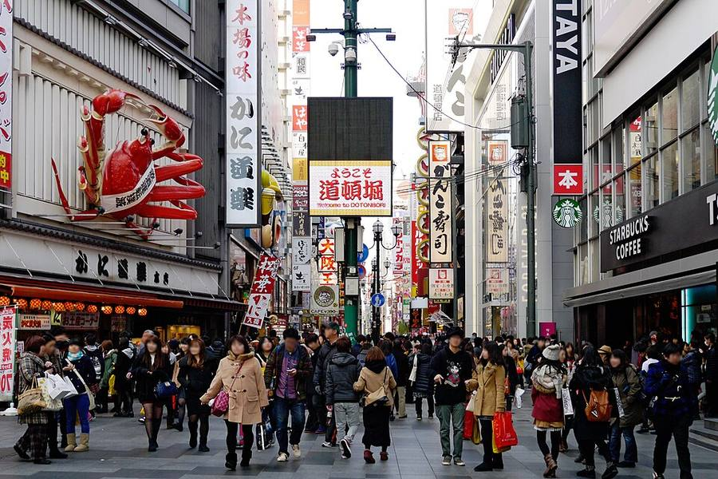


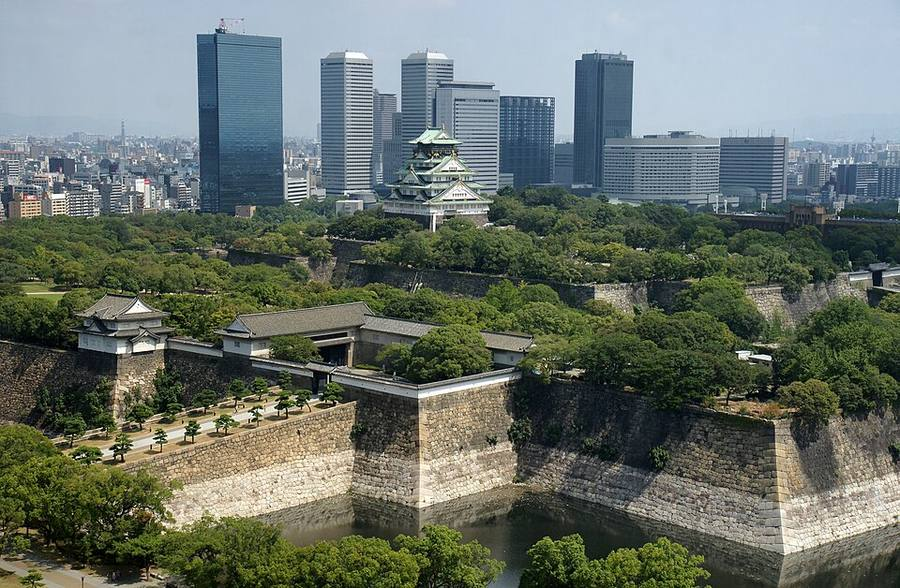

- 23-25 Osaka: еда, улицы, замок (из Kyoto 28 минут)
- ~26-27 вылет с остановкой: Osaka → Dubai 11 ч 20 мин, Dubai → Barcelona 7 ч 35 мин (Kiwi 13.10)
- ~29-30 Barcelona, неделя с семьёй
- 9-12.11 Web Summit, Lisbon
E2. Гейзеры, без Web Summit

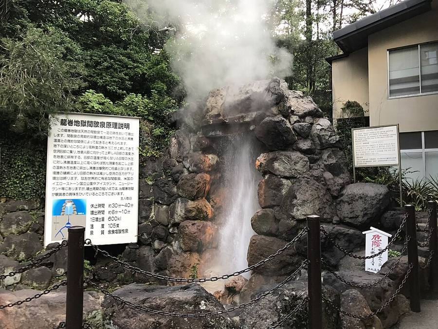


- 23-25 Osaka
- 26 Hiroshima и Miyajima (из Osaka 1 ч 38 мин)
- 27-28 Beppu: семь «адов» и гейзер, утро в Yufuin
- 29.10-1.11 Fukuoka, работа; утром ★ фестиваль воздушных шаров в Saga (30.10-3.11, из Hakata 38 мин)
- 2-3.11 ★ Karatsu Kunchi: 2.11 вечер, 3.11 главный день (из Hakata 1 ч 09 мин)
- ~4.11 вылет с остановкой. Web Summit 9-12.11 тогда без недели в Barcelona
E3. Море

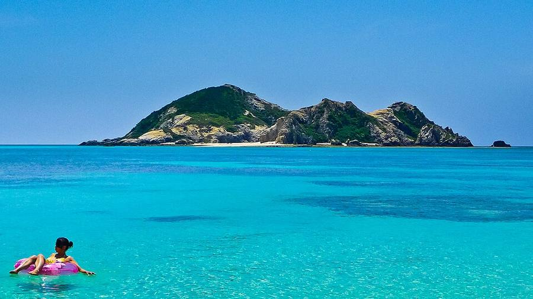


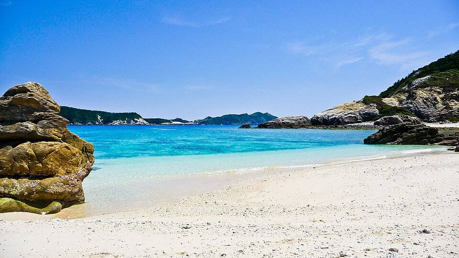

- 23-24 Osaka
- 25+ самолёт на Okinawa, острова Kerama (скоростное судно 50 мин)
- до 08.11 вылет из Японии
Ты не пляжный и Okinawa «американизированная» - поэтому это запасной вариант.
Источники: расписания Nohi и Alpico (официальные), поезда Yahoo!乗換案内, погода Open-Meteo и JMA, фото Wikimedia Commons, карта Esri. Данные на 16.10.2026.